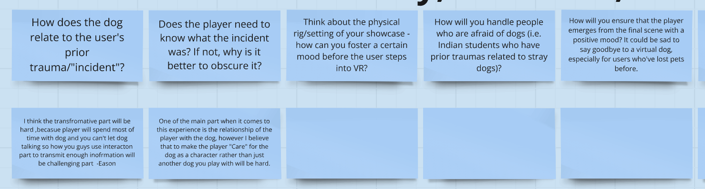
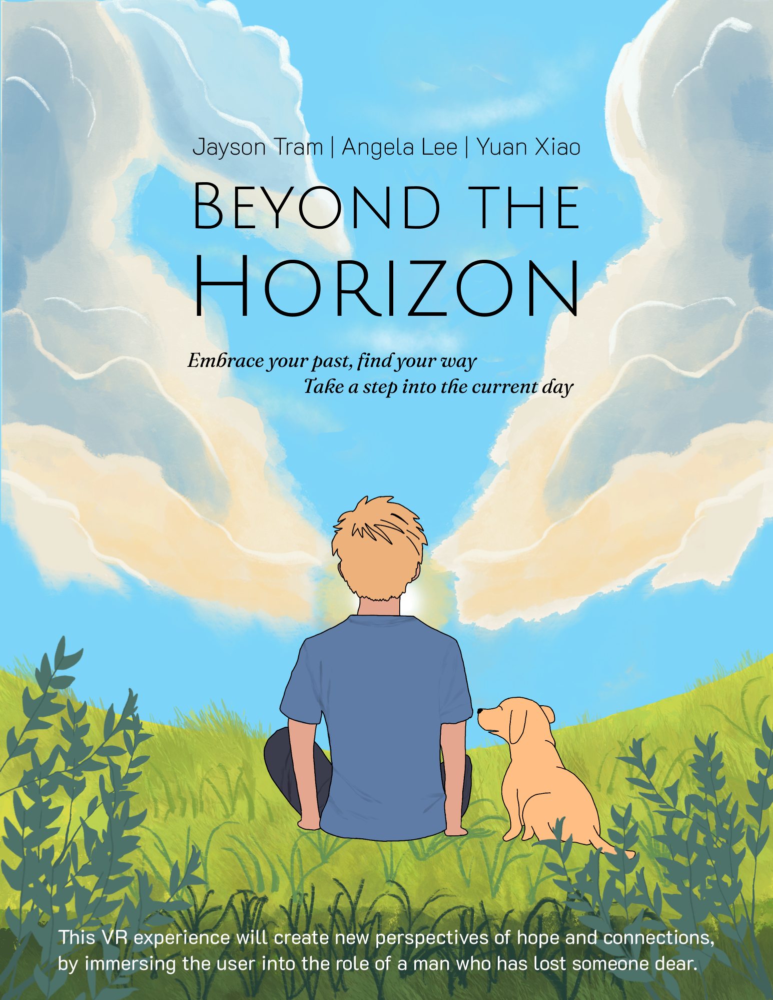
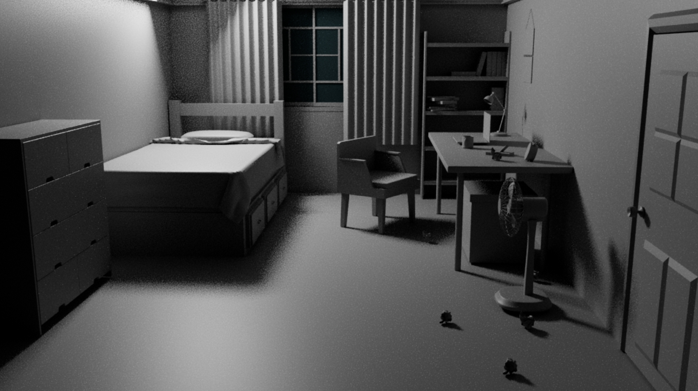

Goal 项目目标
Crafting an emotionally resonant VR experience that guide players through loss, emotional lows, and healing rebirth, fostering personal reflection and new insights. 打造一段具备情绪共鸣的 VR 体验，引导玩家经历失去、情绪低谷与疗愈式重生，促发自我反思与新的理解。
Showcase 展示视频
01 Description 01 项目简介
Beyond the Horizon is an immersive VR experience themed around loss and healing. Players step into the shoes of a young man in his twenties coping with the recent loss of a close friend. Over the course of four different "days," the player navigates various environments and interacts with objects, and most importantly, a dog companion, embarking on a journey from grief toward healing. 《去向远方》是一段以“失去与疗愈”为主题的沉浸式 VR 体验。玩家代入一位二十多岁的青年，面对挚友的骤然离世。在四个不同的“日子”章节中，玩家穿行于各类空间、与物件交互；更重要的是，与新伙伴建立联系，踏上一段从悲伤走向修复的旅程。 The experience begins in a somber, dimly lit environment reflecting the protagonist's sorrow, and gradually transforms into a vibrant, life-filled world by the final day, symbolizing emotional renewal. 体验从昏暗压抑的空间起步，映射主角的沉痛与封闭；并在最终章逐渐转为明亮、充满生命力的世界，以此象征情绪的更新与重启。
02 Interaction Design 02 交互设计
From an interaction design perspective, I focused on embodiment, emotional bonding, and gentle guidance. Every key interaction—from leaning to swim, to petting the dog, to discovering meaningful objects in the bedroom—is tuned to make players act with their bodies, not just their controllers, so the process of healing feels physically lived rather than only watched. 从交互设计视角，我聚焦于VR独特的具身性、情感联结与温和引导。每个关键交互，从“身体前倾来游泳”、到抚摸狗、到在卧室中发现具有意义的物件，都被调校为让玩家用身体去“行动”，而不仅是按控制器，让疗愈过程更像亲身经历，而非旁观叙事。
My work 我的工作
EMBODIMENT — 具身性 —
Designed a leaning-based swimming system that turns the river rescue into a full-body interaction. 设计基于身体前倾的游泳系统，将河流救援转化为全身投入的交互体验。
BONDING — 情感联结 —
Built a progression of dog interactions. 构建狗伙伴交互的递进式设计，让关系逐步建立与深化。
DISCOVERY — 探索发现 —
Framed the Day 1 bedroom around object-based interactions so players uncover the protagonist's trauma by exploring, not by being told. 以物件交互为核心构建 Day 1 卧室，让玩家通过探索自行拼合主角创伤，而不是被“讲述”。
Details 具体内容
— EMBODIMENT — 具身性
For the waterfall sequence, I designed and tuned a leaning locomotion mechanic where players physically tilt forward to swim underwater toward the dog. Instead of "push stick to move," the rescue asks players to commit with their whole body, mirroring the protagonist's decision to confront his fear of drowning. 在瀑布段落中，我设计并调校了基于“身体前倾”的移动机制：玩家需要真实前倾身体，才能在水下向狗游去。救援不再是“推摇杆前进”，而是要求玩家以身体做出承诺，这与主角直面溺水恐惧的心理决断形成同构。
— BONDING — 情感联结
Across Days 2-4, I treated the dog as an interaction partner rather than a background NPC. I designed simple but meaningful actions—feeding, petting, walking alongside it—that slowly break the emotional distance set up in Day 1. User tests showed players wanted "more ways to interact with the dog," which confirmed that this bond-first interaction design was working. 在 Day 2-4 中，我将狗定位为“交互伙伴”，而非背景 NPC。我设计了简洁但有意义的动作（喂食、抚摸、并肩同行）来逐步消解 Day 1 建立的情绪距离。用户测试中，玩家提出“想要更多与狗互动的方式”，这反向验证了“以联结为先”的交互设计确实生效。
— DISCOVERY — 探索发现
In the Day 1 bedroom, I positioned key objects—the framed photo, diving goggles, and mirror—as silent entry points into the story. Examining them triggers short audio cues tied to the protagonist's anxiety and fear of drowning, so players piece together his state through interaction rather than exposition. 在 Day 1 卧室中，我将关键物件（相框、潜水镜与镜子）作为进入叙事的入口。检查物件会触发短音频线索，指向主角的焦虑与溺水恐惧，使玩家通过交互拼合心理状态，而不是依赖说明式叙述。
03 Game Design 03 游戏设计
From a game design perspective, I shaped Beyond the Horizon as a tight four-day arc where grief, connection, crisis, and renewal are mapped to distinct play spaces. The dog is positioned as the core mechanic driving progression: 从游戏设计视角，我将《去向远方》设计为一个紧凑的弧线，通过四天四个不同场景将悲伤、联结、危机与恢复分别映射到不同的可玩空间。狗被定位为驱动进程的核心机制： How you interact with it determines how the emotional journey unfolds, with the river rescue acting as the central test of that bond. 玩家与它的互动方式将决定情绪旅程如何展开，而河流救援是对这段联结的核心验证与峰值考验。

My work 我的工作
ARC — 体验弧线 —
Structured the experience into four distinct "days" that each represent a step in the emotional journey. 将体验结构化为四天为一个章节，每一天代表情绪旅程中的一个阶段。
CLIMAX — 高潮 —
Designed the river rescue as the mechanical and emotional peak where players must act despite the protagonist's fear. 将河流救援设计为机制与情绪的双峰值，迫使玩家在主角恐惧之上仍必须采取行动。
TRANSFORMATION — 深层蜕变 —
Framed the entire experience as a gentle exploration of grief and healing so players leave with a shifted view of what it means to "move on". 将整体体验定位为对悲伤与疗愈的温和探索，使玩家游玩过后对“走出来/继续前行”的含义产生新的理解。
Details 具体内容
— ARC — 体验弧线
I mapped the narrative onto four clear beats: Day 1's claustrophobic bedroom establishes grief and avoidance, Day 2's living room introduces the dog as a fragile source of comfort, Day 3's waterfall forces a confrontation with trauma, and Day 4's autumn forest embodies emotional release. 我将叙事映射到四个清晰节拍：第一天的逼仄卧室建立悲伤与回避；第二天的客厅引入狗作为脆弱的慰藉来源；第三天的瀑布迫使直面创伤；第四天的秋林承载情绪释放与舒展。 Each space has a distinct purpose in the emotional arc, so moving from one day to the next feels like progressing through a process of healing rather than just changing levels. 每个空间在情绪弧线中都有明确功能，因此从一天到下一天的推进，更像是在经历疗愈过程，而不仅仅是换关卡。
— CLIMAX — 高潮
The river rescue is designed as the point where all previous interactions with the dog are put to the test. Up to this moment, players have been building trust through gentle, low-stakes actions—feeding, petting, following. In the rescue, that relationship becomes the reason to jump and push forward despite fear. 河流救援被设计为关系检验点：此前所有与狗的互动都会在此刻被放到台前。玩家通过低风险、温和的动作（喂食、抚摸、跟随—）逐步建立信任；而在救援中，这段关系成为玩家克服恐惧、纵身向前的动机来源。 Mechanically, it's a simple goal—reach the dog—but it is staged as a high-pressure encounter where hesitation and urgency are felt through timing, distance, and the dog's drifting motion. 从机制上目标很简单，抵达狗的位置；但我将其呈现为高压遭遇：通过时机、距离与狗被水流拖拽的漂移运动，让犹豫与紧迫感在体感上被真实感知。
— TRANSFORMATION — 深层蜕变
Beyond telling a sad story with a hopeful ending, I treated the project as a space for players to quietly reconsider their own relationship with loss. The arc of grief → bond → crisis → renewal is deliberately small-scale and personal, so players can project their own experiences onto the protagonist's journey. 我不把它仅仅当作“悲伤但走向希望”的故事，而是将项目视为一个让玩家安静重审自身与失去关系的空间。悲伤 → 联结 → 危机 → 更新的弧线被刻意设计得小尺度、个人化，使玩家能将自身经验投射到主角旅程中。 By letting them act through care—rather than punishment or power fantasy—the design suggests that "moving on" is not erasing the past, but learning to live with it while making room for new connections. 该设计旨在表明：“继续前行”并不意味着抹除过去，而是在学会与之共存的同时，为建立新的情感连接腾出空间。
04 Development 04 开发
On the development side, I owned key systems that made the experience run on Meta Quest 2—from scene construction and VR locomotion scripts to the dog's NavMesh-driven guidance and the custom floating behaviour in the river. 在开发侧，我负责支撑体验在 Meta Quest 2 上运行的关键系统：从场景搭建与 VR 移动脚本，到狗的 NavMesh 引导逻辑，以及河流段落的自定义漂浮行为。 My focus was on building reliable, performant implementations that could support the emotional design without technical distractions. 我的重点是实现可靠且高性能的方案，让情绪设计得以成立，而不被技术问题打断沉浸。

My work 我的工作
PIPELINE — 管线流程 —
Built and integrated the core scenes across four days, from Maya modeling to Unity setup. 从 Maya 建模到 Unity 搭建，构建并整合四个“日”章节的核心场景。
GUIDE — 引导 —
Implemented the dog's NavMesh-based guidance system. 实现小狗的基于 NavMesh 的引导系统。
RESCUE — 救援 —
Developed the custom Dog Floating script and underwater locomotion. 开发自定义 Dog Floating 脚本与水下移动机制。
Details 具体内容
— PIPELINE — 管线流程
I modeled the Day 1 bedroom in Maya, then imported and refined it in Unity, handling scale, colliders, and lighting to suit VR. For subsequent days—the living room, river, and autumn forest—I built and organized the scenes directly in Unity, optimizing layout and asset usage for Meta Quest 2. 我在 Maya 中完成 Day 1 卧室建模，并导入 Unity 进行二次调整，处理 VR 所需的尺度、Collider 与灯光。后续章节；客厅、河流与秋林，则直接在 Unity 中搭建与组织场景，并针对 Meta Quest 2 进行布局与资源使用优化。 This pipeline let us iterate quickly while keeping performance and comfort stable on limited hardware. 清晰的管线流程让我们能快速迭代，同时在有限硬件上保持稳定性能与舒适度。
— GUIDE — 引导
To make the dog a reliable in-world guide, I baked a NavMeshSurface over a custom walkable area and attached a NavMesh Agent controlled by a Dog Guide Controller script. The system moves the dog along a series of waypoints, stops at key viewpoints, and waits for the player to catch up. 为让狗成为可靠的“世界内引导者”，我在自定义可行走区域上烘焙 NavMeshSurface，并挂载由 Dog Guide Controller 脚本控制的 NavMesh Agent。系统让狗沿一组 Waypoints 移动，在关键视点停驻，并等待玩家跟上。 I also reworked the dog's animation clips by stripping position keys, allowing NavMesh to drive movement while animations handle only pose, which prevented sliding and snapping issues. 我也对狗的动画片段做了处理，移除位置关键帧，让 NavMesh 驱动位移、动画仅负责姿态，从而避免滑步与 snapping 问题。
— RESCUE — 救援
For the waterfall sequence, I created a Dog Floating behaviour that simulates the dog being pulled by the current through lateral drifting and panic animations. Combined with the leaning locomotion script, this turns the rescue into a tightly choreographed interaction where both the player and the dog are driven by custom code rather than canned cutscenes. 在瀑布段落中，我实现了 Dog Floating 行为：通过横向漂移与惊慌动画，模拟狗被水流牵引。配合“身体前倾”的移动脚本，救援成为一段强编排的交互，玩家与狗的行为由自定义代码驱动，而非预制的过场。 During testing, I used feedback to fix critical issues like one-eye water rendering and to tune distances and speeds so the scene feels urgent but still achievable. 在测试中，我依据反馈修复了关键问题（如单眼水体渲染 one-eye rendering），并调校距离与速度，使段落既紧迫又在掌握中。
Going further 更多内容
What I did beyond my position 其他贡献
04 Visual Design 04 视觉设计
For the key art poster, I illustrated the protagonist and the dog sitting side by side on a grassy hill, facing a bright opening in the clouds rather than the viewer. Their backs are turned to us on purpose: the emphasis is on quiet companionship and looking toward the future, not on a heroic pose. The warm sky and cloud framing reinforce our core theme of moving from grief toward hope. The tagline "Embrace your past, find your way - Take a step into the current day" is positioned in that open sky, visually tying the message of healing and forward motion to the world they're about to step into. 我绘制了我们游戏的海报，主角与狗并肩坐在草坡上，面向云层中的光亮缺口，而非直视观众。他们刻意背对我们：强调的是静默陪伴与朝向未来的姿态，而不是英雄式摆拍。温暖的天空与云层框景强化“从悲伤走向希望”的核心主题。标语 “Embrace your past, find your way - Take a step into the current day” 被放置在开阔天空处，视觉上将“疗愈与向前”这一信息与他们即将迈入的世界绑定。 For the 3D environment, I modeled the Day 1 bedroom in Maya: the bed, dresser, shelves, desk, chair, standing fan, and small scattered objects on the floor. I arranged the furniture and lighting to feel cramped and heavy, with a single window and thick curtains casting most of the room into shadow. 在 3D 环境部分，我在 Maya 中建模了 Day 1 卧室：床、斗柜、置物架、书桌、椅子、落地风扇，以及散落在地面的细小物件。我通过家具摆放与灯光组织营造“逼仄、沉重”的空间感：单一窗户与厚重窗帘让大部分房间落入阴影。


Reflection 项目反思
When Interaction, Design, and Code Work Together 当交互、设计与代码同时工作
During the development of Beyond the Horizon, I worked across interaction, game design, and development, which made me realize how tightly these disciplines have to work together to create an emotionally engaging experience. On the interaction side, I saw how embodied input and subtle feedback can quietly build a bond between player and dog. On the game design side, decisions like making the dog the core emotional mechanic and grounding everything in self-other overlap only really paid off when the environments, lighting, and navigation were tuned to follow the same emotional curve. 在开发《去向远方》的过程中，我同时参与交互、游戏设计与开发，这让我更清楚地意识到：要做出具情绪牵引力的体验，这些学科必须高度协同。在交互层面，我看到具身输入与细微反馈如何悄然建立玩家与狗之间的联结；在游戏设计层面，“让狗成为核心情绪机制”、并将体验建立在自我与他者的重叠感之上的决策，只有在环境、灯光与导航共同遵循同一条情绪曲线时，才真正产生效果。
Next Steps for 《去向远方》 Beyond the Horizon 迭代展望
Next, I want to push depth, not scope, add adaptive music that only kicks in at key beats (like the rescue), plant more small environmental clues about the friend in each day, and give the dog smarter reactions to player gaze and proximity. The goal is to keep the project technically lean, but make every extra sound, prop, and behavior directly strengthen the feeling that "this dog is my reason to move forward." 下一步我希望“做深而不做大”：加入只在关键节点（如救援段落）触发的自适应音乐；在每一日埋入更多关于挚友的环境线索；并让狗对玩家视线与距离产生更聪明的反应。目标是在技术层面保持精简，但让每一处新增的声音、道具与行为都直接强化“这只狗是我继续前行的理由”这一情感驱动力。